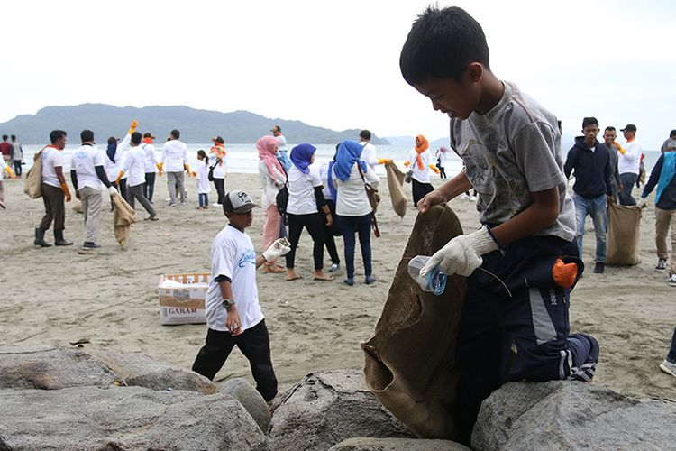
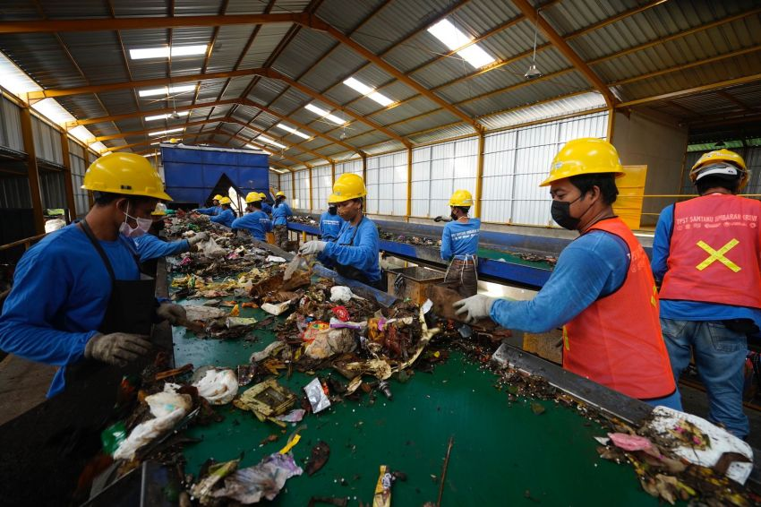
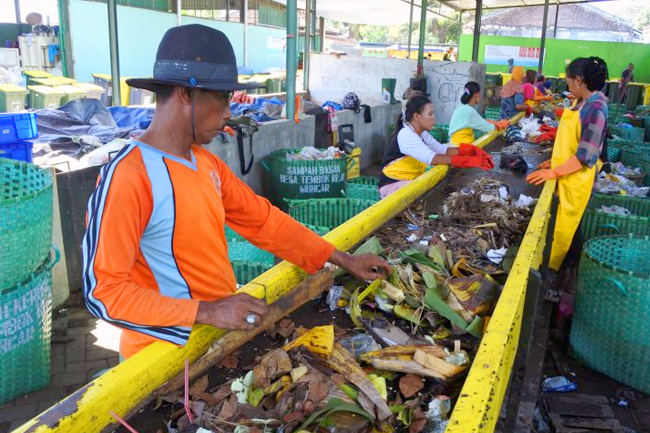

Kami adalah komunitas peduli lingkungan yang berkomitmen untuk
mengurangi dampak sampah terhadap planet kita. Di BumiPijak, kami
mempercayai bahwa setiap langkah kecil yang kita ambil dapat membuat
perbedaan besar dalam menjaga keberlanjutan bumi kita.
Apa yang kami tawarkan
Pengumpulan Sampah
Kami mengambil sampah Anda dengan cepat dan efisien.
Pengolahan Sampah
Kami mendaur ulang, mengompos, dan memanfaatkan sampah dengan
bijak.
Edukasi Lingkungan
Kami mengedukasi masyarakat tentang pentingnya peduli
lingkungan.
Program Insentif
Bergabunglah dengan kami dan nikmati program insentif yang
menarik.
Mari bersama-sama menjaga Bumi kita, langkah demi langkah!

Menjaga lingkungan
Kami bersama mengelola sampah bekas pakai jadi lebih bermanfaat
sehingga tidak berakhir di Tempat Pembuangan Akhir (TPA) dan
mencegahnya untuk mencemari lautan.

Membuat lapangan kerja baru
Pijak telah menjadi profesi baru yang diminati masyarakat.
Selain meningkatkan penghasilan, Pijak juga berperan dalam
proses pengelolaan sampah bekas pakai yang lebih baik di
masyarakat.

Meningkatkan pendapatan
Mereka yang menjadi Pijak mendapatkan detail pekerjaan dan
penghasilan sesuai dengan sampah yang dikumpulkan serta mendapat
insentif dari jarak penjemputan yang ditempuh.